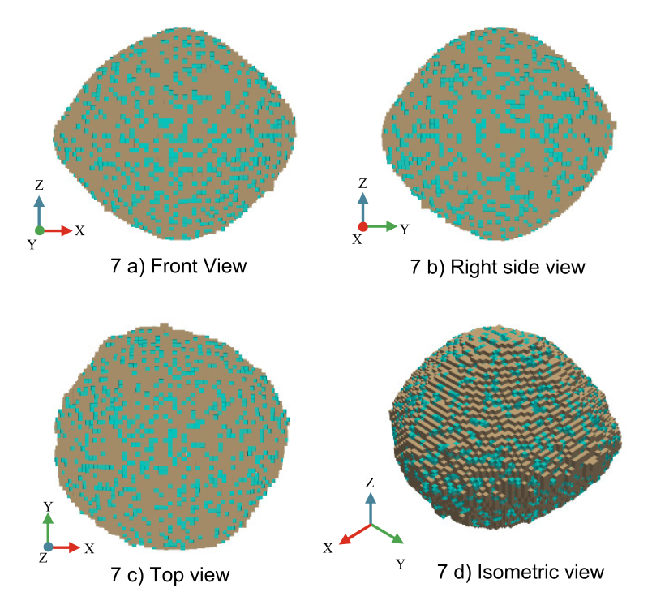
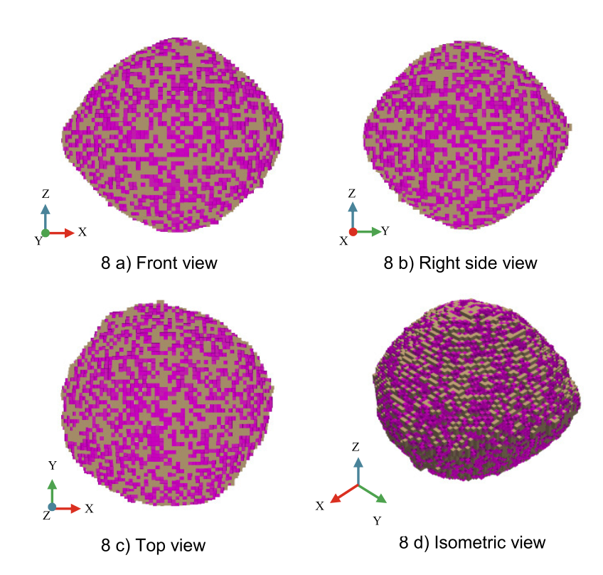
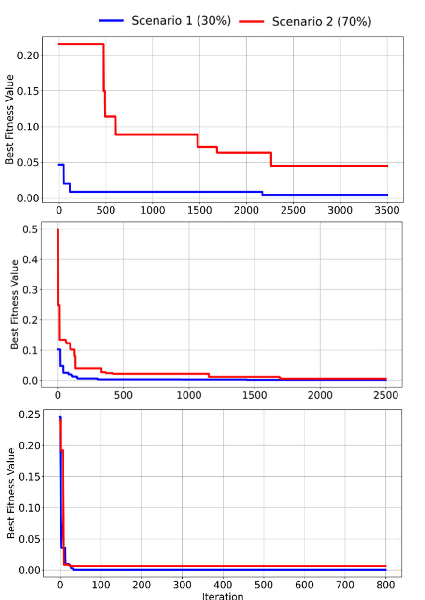
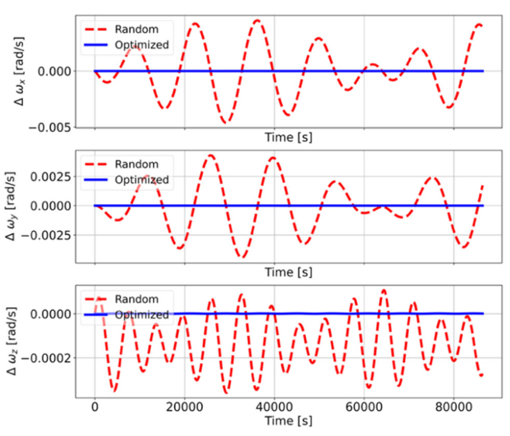
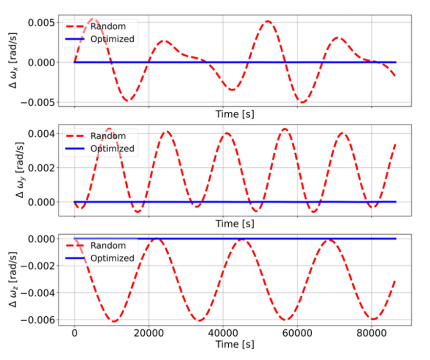
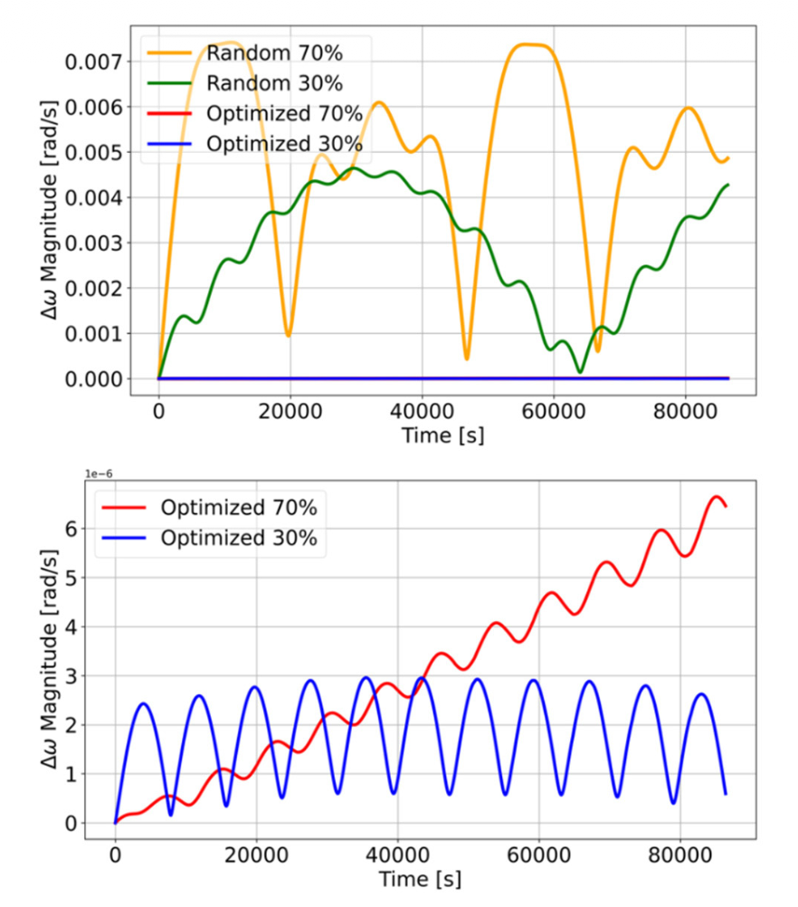
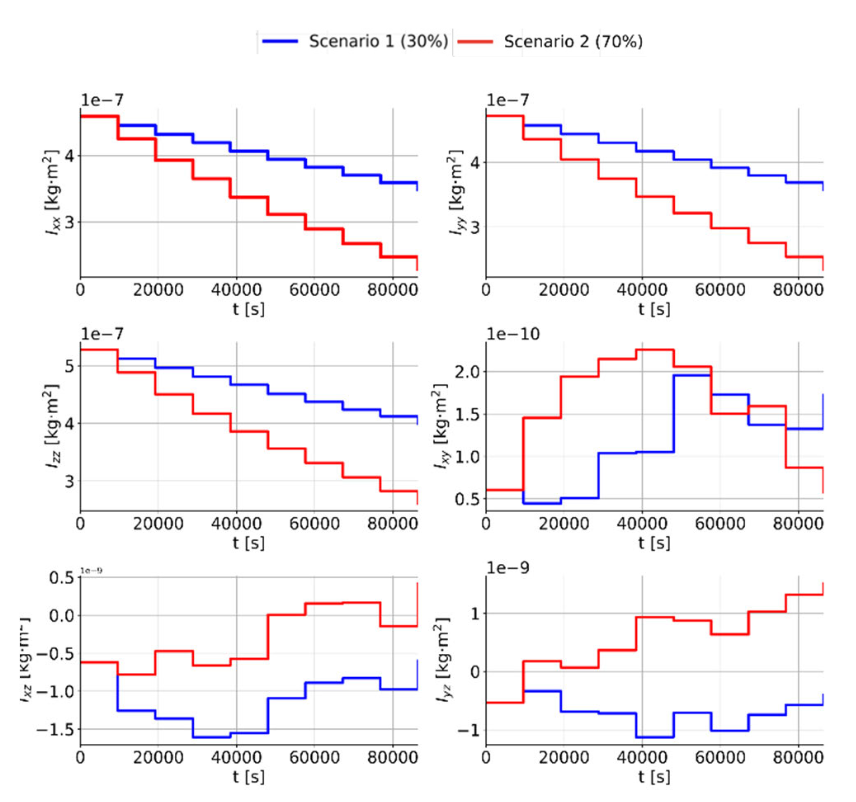

Angular velocity is propagated through time after each mass-removal update.
Asteroid engineering · Rotational dynamics · Optimization
Asteroid Mining
Optimization
A physics-based extraction-planning framework that uses Particle Swarm Optimization to preserve the rotational stability of asteroid Bennu during large-scale material removal.
Particle Swarm OptimizationEuler dynamicsPythonBennu

30% / 70%mass-removal scenarios
3PSO swarm sizes tested
6inertia-tensor components tracked
IEEE Accesspeer-reviewed publication
Engineering problem
Mining changes the body being mined.
Removing material from an irregular small body changes its mass distribution and inertia tensor. Even without an applied external torque, those changes can alter angular velocity, complicate spacecraft proximity operations, and increase structural and mission risk.
I developed a computational framework that identifies extraction locations and sequences that minimize rotational disturbance while preserving a physically feasible surface-to-core removal process.
Numerical model
A changing-inertia representation of Bennu
The OSIRIS-REx shape model was discretized into small cubes. Each cube carries mass and position information, allowing the complete inertia tensor to be recalculated after every removal step.
Import shape modelOSIRIS-REx Bennu geometry
→
Voxelize asteroidMass and position for each cube
→
Update inertiaAfter each extraction step
→
Solve dynamicsEuler equations
→
Optimize removalPSO-selected sites
Rotational dynamics
Time-varying inertia governs the response
The body-fixed Euler equation is solved while the asteroid inertia tensor changes discretely as material is removed.
d/dt [ I(t)ω ] + ω × I(t)ω = M
The study evaluates the torque-free case, M = 0, to isolate the rotational consequences of mass redistribution.
Principal and off-diagonal inertia terms are recomputed from the remaining cubes.
Energy and angular momentum conservation are monitored to assess numerical consistency.
Optimization formulation
PSO selects low-disturbance extraction sites
The objective is to minimize the mean-squared deviation between the initial and simulated angular-velocity magnitudes over the extraction sequence.
MSE = (1/n) Σ [ ω(i) − ω̂(i) ]²
Lower fitness represents an extraction plan that more closely preserves the original rotational state.
Scenario geometry
Optimized extraction remains distributed and dynamically selective
The 30% and 70% cases reveal how the optimizer distributes removal sites while respecting the progressive surface-to-core constraint.


Site-selection insight
The optimized sites remain broadly distributed, particularly along the z direction, while avoiding excessive concentration at the polar regions. This symmetry helps preserve the asteroid's rotational behaviour as the available mass decreases.
PSO performance
Swarm size changes convergence speed more than final solution quality
Swarm sizes of 50, 100, and 200 particles all approached low fitness, while the largest swarm converged in substantially fewer iterations.

Dynamic comparison
Optimization suppresses rotational disturbance
Random removal produces sustained oscillatory residuals, whereas the optimized solutions remain nearly flat and centred near zero.



Near-zero residualsoptimized angular-velocity components
30% and 70%stable solutions at both extraction fractions
Lower control burdenreduced need for active rotational correction
Mass-property evolution
The inertia tensor records how excavation reshapes the body
Principal moments decrease as mass is removed, while off-diagonal terms reveal scenario-dependent changes in mass asymmetry.

Ixx, Iyy, and Izz decrease stepwise as the remaining asteroid mass declines.
Ixy, Ixz, and Iyz reflect the changing asymmetry introduced by site selection.
Energy and angular momentum remain effectively conserved under the torque-free simulation assumptions.
My contribution
Complete research and computational ownership
I completed the full project workflow, from problem definition and dynamic modelling through optimization, simulation, visualization, interpretation, and publication preparation.
- Defined the asteroid-mining dynamics and optimization problem
- Developed the cube-based Bennu representation in Python
- Implemented inertia-tensor calculation and stepwise mass removal
- Solved Euler's rotational equations with time-varying mass properties
- Implemented Particle Swarm Optimization for extraction-site selection
- Designed and compared 30% and 70% removal scenarios
- Evaluated convergence, angular-velocity residuals, inertia, energy, and angular momentum
- Produced the figures, interpreted the results, and prepared the IEEE Access paper
Tools and methods
PythonParticle Swarm OptimizationNumPySciPyPyVistaMatplotlibEuler equationsRigid-body dynamicsNumerical simulation
Publication
Peer-reviewed research in IEEE Access
Mineral Extraction Scenarios From an Asteroid via Optimization Considering Rotational Dynamics
S. Ziaolhagh and M. Jafari-Nadoushan · IEEE Access, Volume 13, 2025
DOI: 10.1109/ACCESS.2025.3615449